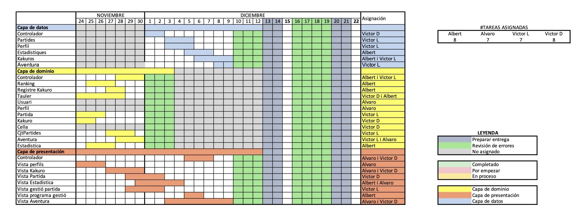

PROP - Grup 14 - Subgrup 2
Integrants del grup
- Ariño Cabau, Alvaro
- Bertran Serrano, Albert
- Delgado Padilla, Victor Manuel
- Latorre López, Victor
Mails del grup
- alvaro.arino@estudiantat.upc.edu
- albert.bertran.serrano@estudiantat.upc.edu
- victor.delgado@estudiantat.upc.edu
- victor.latorre@estudiantat.upc.edu
Distribució dels directoris del projecte
Cada directori princiapl conté un index.html amb diferents explicacions.
Relació principal de directoris
- FONTS - Arxius font del projecte
- DOCS - Documentació del projecte
- EXE - Executables
- Altres
- style: Per guardar els estils dels HTML
- lib: conté les llibreries externes usades per programa
- files: conté arxius necesaris pel arxius Markdown i HTML
Llibreries externes utilitzades
Per administrar totes les dependencies del projecte hem fet ús del Gradle.
Per acabar de completar la funcionalitat del nostre programa hem fet ús de diferents llibreries que ens podien facilitar la feina alhora que aconseguiem funcionalitats mès completes.
JavaFX
Per aconseguir una interfaç gràfica mès rica, fem ús de les capacitats gràfiques que JavaFX aporta.
Gson
Per guardar d'una forma estructurada y ordenada les dades, fem ús d'archius JSON i per codificar i descodificar fem ús d'aquesta clase
Gson is a Java library that can be used to convert Java Objects into their JSON representation. It can also be used to convert a JSON string to an equivalent Java object.
Distribució de la feina
La distribució s'ha fet d'una forma equitativa la carrega de treball de cada classe:
Alguns apunts de la ditribució:
- Com que la classe usuari, perfil i cjt de perfils són molt simples en implementació, l'Alvaro també s'encarrega de tota la capa de dades.
- Les casselles en color blanc suposen classes programades per 2 membres o mès de l'equip.
- La classe Kakuro en ser la principal de projecte hem considerat adequat que sigui programada per tots alhora.
- Cada membre programarà la Vista de la capa de presentació de la seva classe.
Documentació JavaDOC
Per accedir a la documentacó generada amb JavaDOC cliqueu el següent botó
data-files
Conté els arxius de dades. En aquesta carpeta és on trobem totes les dades guardades en format JSON en general y en format .txt quan el JSON no es el format mès idoni per la funcionalitat requerida.